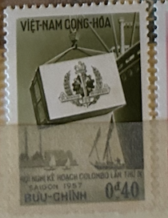
| SOURCE | TITLE| IMAGE MATCH | click to source page |
| www.ebay.com | Vintage stamps, Lot of 5 unused, Vietnam, 1957, Cong-thu ... | 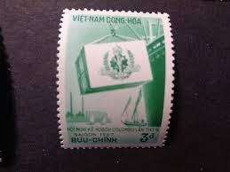 |
| vnsinc.tripod.com | Vietnam, 1957 Stamp Year-Page 1 of 2 | 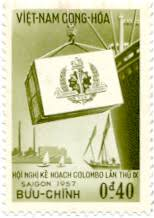 |
| www.ebay.com | 1957 South Vietnam Stamps Loading Cargo Scott # 68-72 Imperf ... | 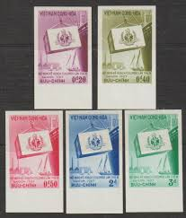 |
| www.mercari.com | ST-981) Stamp: 1957 Vietnam, Scott #70 Rare | Mercari |  |
| www.ebay.com | SOUTH VIETNAM 1957 9th Colombo Plan Conference Saigon 68-72 ... | 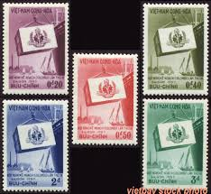 |
| artcorner.vn | Bộ tem: Hội nghị Kế hoạch Colombo lần thứ IX - Tem VNCH - 1957 | 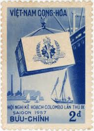 |
| www.osta.ee | 21-34 vietnam (231192564) - Osta.ee | 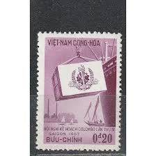 |
| www.hipstamp.com | South Vietnam Scott 331 MNH** from 1968 set | Asia - Vietnam ... | 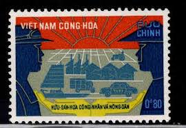 |
| www.ebay.com | 1957 RVN South Vietnam Stamp MNH Colombo Plan Saigon 2D | eBay | 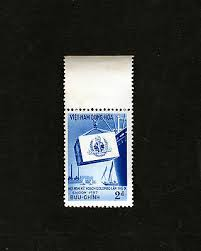 |
| www.freestampcatalogue.com | Stamps from Vietnam, South - Freestampcatalogue.com - The ... | 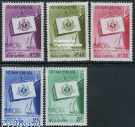 |
| picclick.co.uk | RARE 1956 SOUTH Vietnam SPECIMEN Stamps POST OFFICE SAIGON ... |  |
| mapsonstampsdb.com | Maps on Stamps : Vietnam (South Vietnam) | A Database of ... |  |
| thestampforum.boards.net | Vietnam : Stamps. | The Stamp Forum (TSF) | 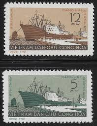 |
| www.ebay.com | 1961 North Vietnam Stamps Port of Hải Phòng Scott # 177-178 ... | 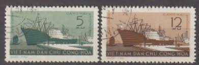 |
| thriftytraveller.wordpress.com | North Vietnam Propaganda Stamps – The Thrifty Traveller | 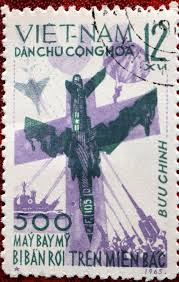 |
| colnect.com | Stamp: Sinking of USS Card (Vietcong, National Liberation ... |  |
| en.todocoleccion.net | smi) 1990 vietnam, boats, used, transportation, - Buy ... | 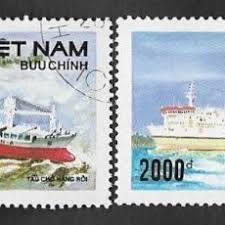 |
| www.amazon.com | Amazon.com: South Vietnam Stamps - 1955, Scott 30-5 ... | 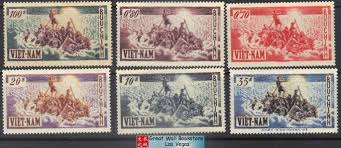 |
| www.alamy.com | Attack on US Ship Card in Saigon Port, Vietnam war, postage ... | 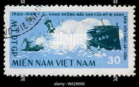 |
| postalmuseum.si.edu | Socialist Republic of Vietnam | National Postal Museum | 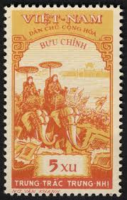 |
| fineartamerica.com | 1964 Vietnam Saigon Zoo Postage Stamp Digital Art by Retro ... | 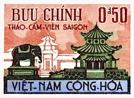 |
| www.freestampcatalogue.com | Stamps from Vietnam, South - Freestampcatalogue.com - The ... | 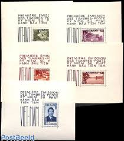 |
| seemystamps.com | See My Stamps! - A Place to Show Off Your Stamp Collection ... | 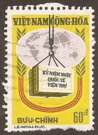 |
| www.linns.com | Demand strong for cacheted FDCs from Vietnam | 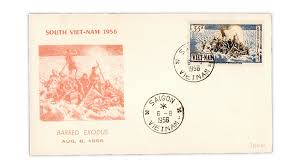 |
| www.lastdodo.com | Stamps from Vietnam - North Vietnam Stamp catalogue - LastDodo | 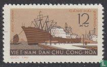 |
| www.stampcollectingblog.com | Some South Vietnam varieties that major western stamp ... | 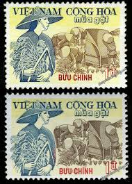 |
| commons.wikimedia.org | File:Seal of the President of the First Republic of Vietnam ... | 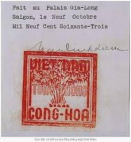 |
| www.hipstamp.com | South Vietnam Scott 271 MNH** Young Farmers stamp | Asia ... | 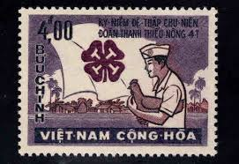 |
| www.michellerobinla.com | A Short History of South Vietnam Through Stamps - Michelle ... | 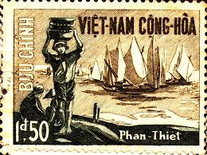 |
| pixabay.com | Democratic Republic Of Vietnam - Free photo on Pixabay | 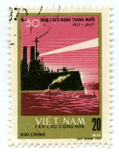 |
| www.standingwellback.com | The IED that sank a US Aircraft Carrier - Standing Well Back | 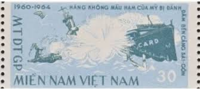 |
| travelstamps.com | Vietnam Travel Stamp – Travel Stamps | 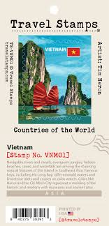 |
| stampsbooks.com | Vietnam Stamps Album Pages (1946 To 2023) | StampsBooks ... | 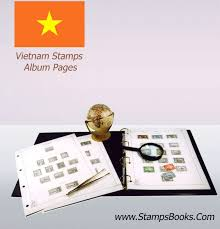 |
| militaryphs.org | The Military Postal History Society | 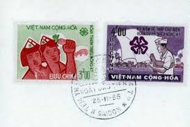 |
| thestampforum.boards.net | Vietnam Cinderellas | The Stamp Forum (TSF) | 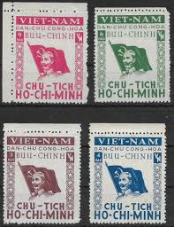 |
| www.mysticstamp.com | Worldwide - Asia - Vietnam - Page 1 - Mystic Stamp Company | 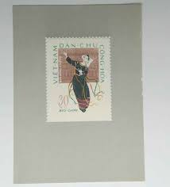 |
| mapsonstampsdb.com | Maps on Stamps : Vietnam | A Database of Cartophilately | 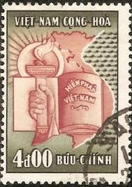 |
| www.postbeeld.com | Stamps from Vietnam - PostBeeld - Online Stamp Shop - Collecting | 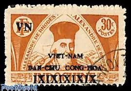 |
| www.stampsandstuff.net | Stamps from Vietnam | 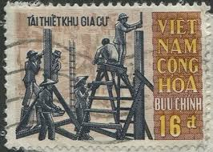 |
| www.shutterstock.com | 76,838 Vintage Postage Stamps Vietnam War Royalty-Free ... | 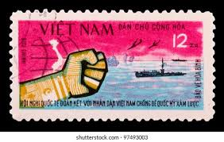 |
| thegreasypen.substack.com | A Very Short History of a Colonial Sandwich | 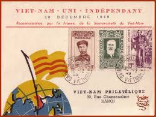 |
| www.buyhungarianstamps.com | #961-964 Czechoslovakia - Ships, Set of 4 (MNH) – Eastern ... | 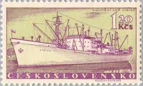 |
| www.stampcommunity.org | Vietnam Postal History During The Vietnam War - Page 5 ... | 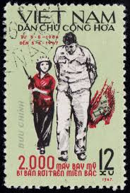 |
| www.youtube.com | Story of the first stamp set of Vietnam | VTV World - YouTube | 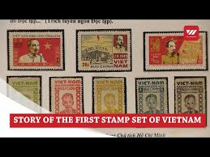 |
| vietnamtourism.gov.vn | Vietnamese stamps and postcards issued over 100 years ago on ... | 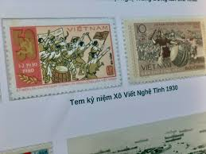 |
| www.cherrystoneauctions.com | The Mahendra Sagar Collection of Inverted Centers - October ... | 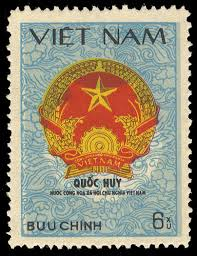 |
| beta-en.mic.gov.vn | Vietnam honors 150 years of UPU with new stamp collection | 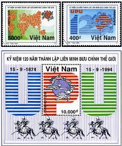 |
| stampbears.net | Vietnam Stamps by tomd | Stamp Bears | 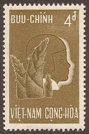 |
| www.facebook.com | Going to Vietnam again! Any stamp places to go to in Ho Chi ... | 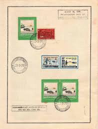 |
| en.wikipedia.org | Postage stamps and postal history of Vietnam - Wikipedia | 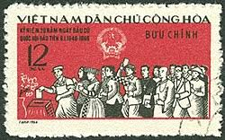 |
| www.vietbay.com | vietbay.com: First Anniversary of Viet Nam's Admimission to ... | 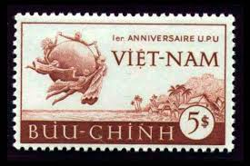 |
| www.freemalaysiatoday.com | North Vietnam's propaganda stamps tell of a horrific war | FMT | 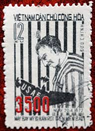 |
| www.stampexindia.com | VIETNAM – 490 Different Large Stamps - Indian Stamp Co ... |  |
| www.reddit.com | North Vietnam's stamp in 1965 - "500 American Aircrafts shot ... | 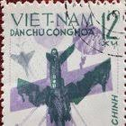 |
| www.alamy.com | Truong sa hi-res stock photography and images - Alamy | |
| topstamps.ru | 1961 г. Вьетнам — TOP STAMPS | |
| ourpassports.com | Official passport used for Vietnam - Our Passports |  |
| www.itsnicethat.com | Đức Lương's archive commemorates the golden era of ... | |
| www.mintageworld.com | Propaganda Stamps of North Vietnam | Mintage World | |
| www.freestampcatalogue.com | Stamps from Vietnam - Freestampcatalogue.com - The free ... |
{kind=link}